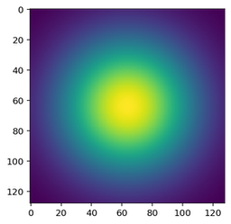
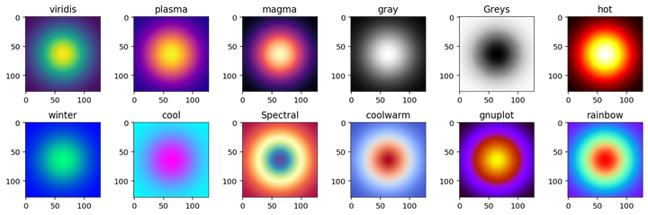

はじめに
Objects as Points (CenterNet) を実装するときにオブジェクトの中心からヒートマップの画像を作ることがある。 そのヒートマップ画像をプレビューするときに良い見た目にしたいと思って、matplotlib の cm.get_cmap というものがあったのでメモしておく。
正規分布の画像
$$ f(x)=\exp \left(-\frac{(x-\mu)^{2}}{2 \sigma^{2}}\right) $$
まずは、何も指定せずに numpy で計算した結果を画像として表示する。
import numpy as np
from matplotlib import pyplot as plt
x, y = np.meshgrid(np.linspace(-1, 1, 128), np.linspace(-1, 1, 128))
d = np.sqrt(x * x + y * y)
sigma, mu = 0.5, 0.0
g = np.exp(-(d - mu) ** 2 / (2.0 * sigma ** 2))
plt.imshow(g)
plt.show()

cm.get_cmap を使う
cmap_names = [
'viridis', 'plasma', 'magma', 'gray',
'Greys', 'hot', 'winter', 'cool',
'Spectral', 'coolwarm', 'gnuplot', 'rainbow']
fig, matrix = plt.subplots(nrows=2, ncols=6, figsize=(12, 4))
for i, ax in enumerate(matrix.flatten()):
cm = plt.get_cmap(cmap_names[i])
im = cm(np.uint8(g * 255))
ax.imshow(im)
ax.set_title(cmap_names[i])
fig.tight_layout()
plt.show()

いくつかカラーマップを指定して表示してみた。 ビルトインされているカラーマップの一覧は以下から参照できる。
- https://matplotlib.org/2.0.2/examples/color/colormaps_reference.html
参考
- matplotlib のカラーマップ
- https://matplotlib.org/tutorials/colors/colormaps.html
- matplotlib.cm.get_cmap
- https://matplotlib.org/api/cm_api.html?highlight=get_cmap#matplotlib.cm.get_cmap